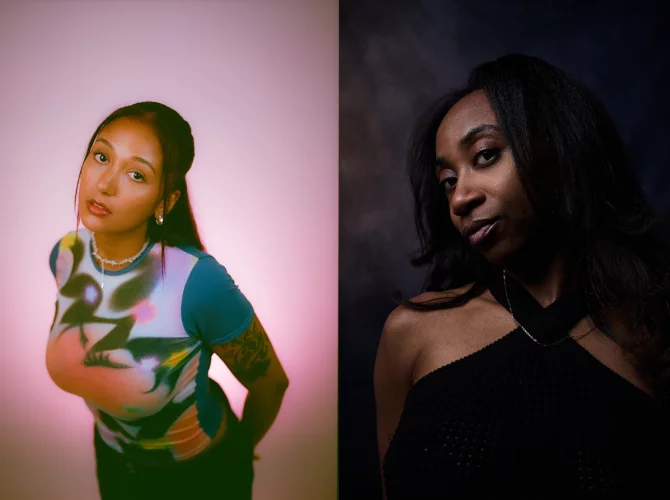

Two decks, one unstoppable groove.
Amaliah and NIKS are two UK-based DJs known for their dynamic back-to-back sets, blending house and techno with a focus on high-energy grooves and diverse influences.
Amaliah b2b NIKS deliver electrifying DJ sets that seamlessly blend house and techno, showcasing their deep knowledge of dance music and a commitment to creating inclusive, high-energy club experiences.
As co-founder of the label Black Artist Database, London-based NIKS provides a platform for production talent of color. Take, for example, the fantastic series of compilations under the name 'Synergy,' brimming with creative club bangers. Fellow Londoner Amaliah shines on the first installment with a gritty hybrid of tribal house and UK funky. Both artists regularly team up behind the decks to set British clubs ablaze. With their iconic UK rave sound, they effortlessly conquer dance floors worldwide. Talk about synergy. Image Amaliah: Harriet Taylor, image NIKS: Ollie Trench
Als medeoprichter van het label Black Artist Database biedt de Londense NIKS een platform voor productietalent van kleur. Neem bijvoorbeeld de geweldige serie compilaties onder de noemer ‘Synergy’, die barsten van de creatieve clubbangers. Stadsgenoot Amaliah prijkt op het eerste deel met een vuige hybride van tribal house en UK funky. Beide artiesten staan met enige regelmaat samen achter de decks om Britse clubs in lichterlaaie te zetten. Met hun iconische UK ravegeluid walsen ze met hetzelfde gemak over andere dansvloeren, waar ook ter wereld. Over synergie gesproken. Beeld Amaliah: Harriet Taylor, beeld NIKS: Ollie Trench
Saturday, July 04
00:30 - 02:30
REX
2
♀️ Female
Yes